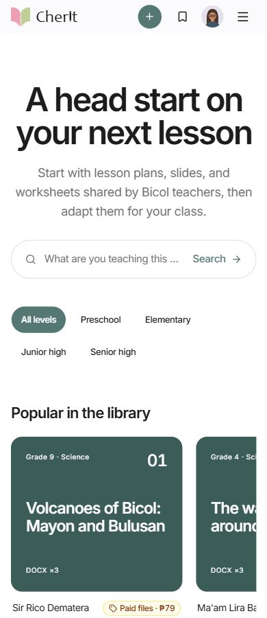

012026
Web application
Collaborative hackathon prototype
Lesson discoveryDesktop + mobile


My contributionWebsite direction · Feature design
QA & presentation
Helping shape how teachers discover and assess a lesson pack. Built collaboratively with JP and CJ, with shared architecture and feature decisions.
Read case study